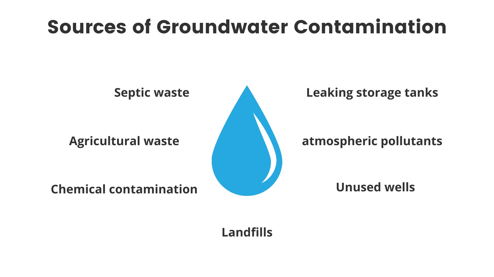

Analytical Solutions of the Advection Dispersion Equation
This visualization tool provides four types of analytical solutions to the advection-dispersion equation as follows:
In addition to the analytical solution, the user can change values to study groundwater contamination under various subsurface conditions including darcy velocity, diffusion coefficient, contaminant retardation and first-order decay parameter.
